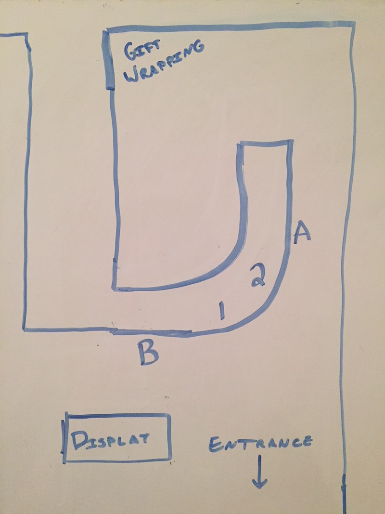

Letting the User Guide You: Analyzing Store Design
Jun 6, 2018 · 670 words · 4 minutes read
I enjoy looking at design in everyday life and the balance between how things are designed and how people try to use them.
A store I visited recently had bad customer flow, and the signs were there. There was literally a sign telling customers where to line up for the checkout line. Customers didn’t naturally line up there, and an employee was correcting customers who missed the sign. This is bad design.
Here’s a quick sketch of the layout of the checkout corner of the store (not quite to scale):

A curved counter extended from one wall towards the back of the store. Two cash registers (1 and 2 on the diagram) were on the bottom-right section of the curve. There was a display of small checkout trinkets at B and calligraphy materials on the right wall at A.
Where would you line up? Where would you want customers to line up?
Imagine you’re a customer seeing this for the first time. It would be natural to line up at B after you approach the cash registers from the rest of the store. That’s where the majority of the supplies are, so that’s probably where you spent most of your time. You could spend your line-waiting time looking at the checkout trinkets (“I should buy dog stickers for $2.99!”). Once you check out, you could turn to the right and follow the wall to the exit.
However, this store had the line start at A. They had a “Line Starts Here” sign hanging from the ceiling. Customers who didn’t see the sign would line up at B, and one of the employees would let them know that the line began at A. Judging from the employee’s exasperated tone, this happened often.
Customers would then walk over to A. If there were already other customers waiting, the arriving customer would walk to the back of the store to the end of the line. A’s corridor is only around two people wide, which meant there was congestion as people shuffled to the rear with even more if someone was looking at the calligraphy section.
This is wasted energy. The customer has to think about where to go, and their experience is affected. If their experience is anything but easy, it’s not right. For the employees, having to worry about how customers are lining up is time and energy that could be better spent elsewhere.
Disclaimer: I was not one of the disgruntled customers. I noticed the odd design when looking for the checkout, and the sign stood out to me. I noticed the sequence above happen multiple times while I was waiting to check out. Life is too short to worry about things like getting to check out first, but life is not too short to think about peoples’ experiences.
How can we tell this is bad design? We can tell it’s not intuitive, as customers are not lining up at A on their own. If it was intuitive, you wouldn’t need to put up a sign. Even with the sign it’s not natural; the employee had to tell people where to go.
People are generous with their intuitions. They will show you what they expected as they try to do that first, and you have to listen. Seeing a user interact with a design underlines the differences between the assumptions of the designer and the assumptions of the user, and it lets you build empathy for your user.
In this case, the customers are showing their assumptions and are already doing what’s natural. Let them line up at B. Ditch the sign. Let your employees not worry about directing, and let customers go to the rear of the store on their own if they want to wrap gifts. Keep it simple. Design isn’t easy, but it’s not always hard.
PS: If you can identify and tell me what store this is, I’ll buy you a beer/coffee/tea/notebook if you’re ever in Boston! Side note: the store may be in the Boston area.